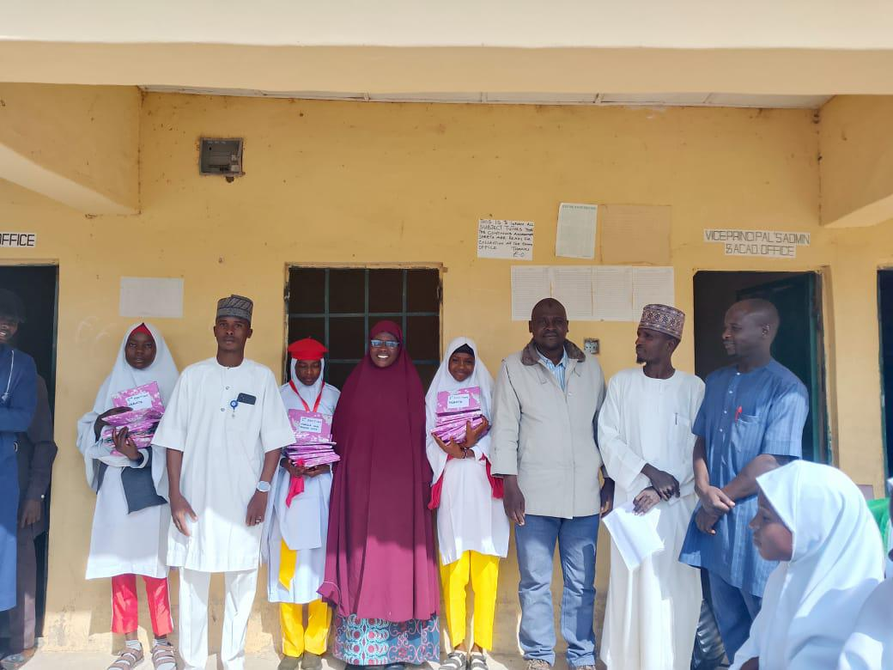
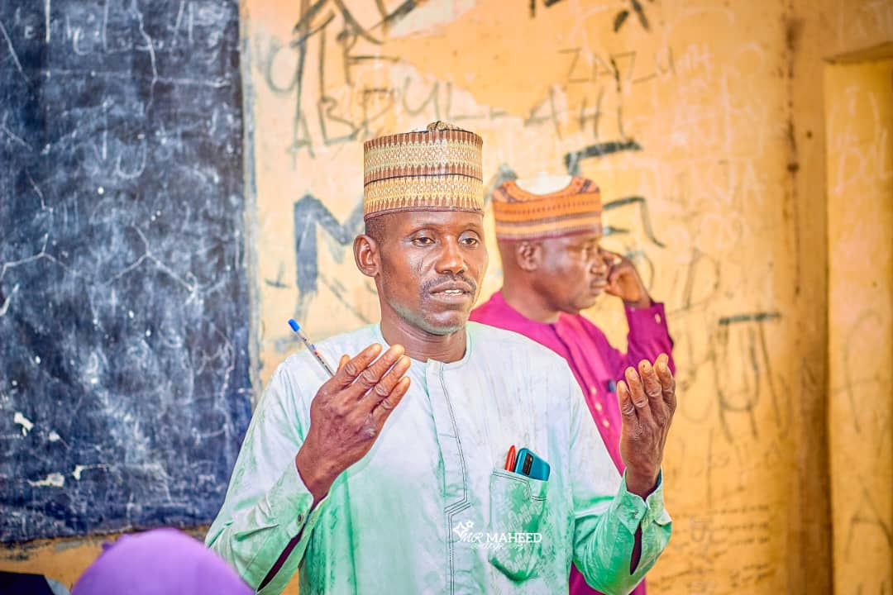

GHISA (Gujba Higher Institution Students Association) is a students-led organization committed to promoting academic excellence, leadership development, and community service within Gujba Local Government Area. Through various educational programs, outreach activities, and students support initiatives, the association continues to empower young learners and contribute positively to the growth of education in the community.